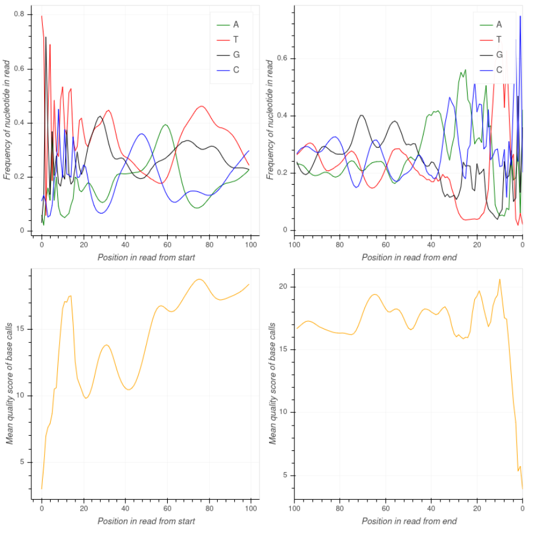

Step 1: Data Quality Control
Raw sequencing data (FASTQ files) is assessed for quality using long-read specific tools from NanoQC package. This step detects issues such as adapter contamination, low-quality reads, or GC bias before continuing with further analysis.

Step 2: Trimming
Reads are trimmed according to different parameters. Adapters are removed, and then reads are filtered by quality (considering if sequences were originated with PacBio or ONT technology) and length (to minimum-maximum amplicon size).
Step 3: Denoising/Clustering
Long read amplicon unsupervised clustering is performed with NanoCLUST software. Based on sequence similarity and followed by consensus sequence generation for each cluster, this step is crucial to reduce sequencing errors that will allow for accurate taxonomic classification. It reduces Nanopore's error rate and produces representative and high-confidence sequences per taxon.
Step 4: Taxonomic assignment and visualization
A wide set of tools can be used to perform the taxonomic assignment of reads/OTUs/consensus sequences, depending on the target amplicon. Centrifuge, Kraken2 or BLASTn, using as reference different databases, can stablish the different taxa that the sample comprises. Output is often a table that includes each read/OTU/sequence, taxonomical assignation, % identity and a score/value indicating the strength of the assignation.
This taxonomic assignment can be then graphically visualized with Krona, which generates a multilayer interactive piechart with a hierarchical representation of taxa.
➤ View interactive Krona chart
Step 5: Abundance profiling
The relative content of each taxa can be calculated and graphically represented within a sample. Several tools provide these plots, like NanoCLUST (previously used for denoising/clustering) or EMU.